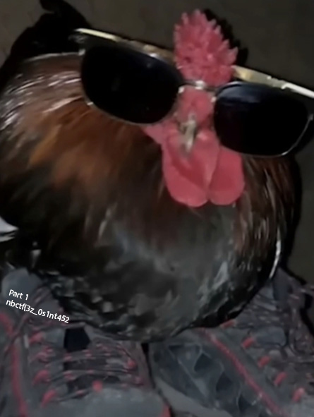
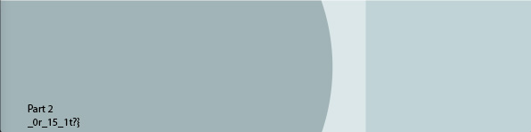
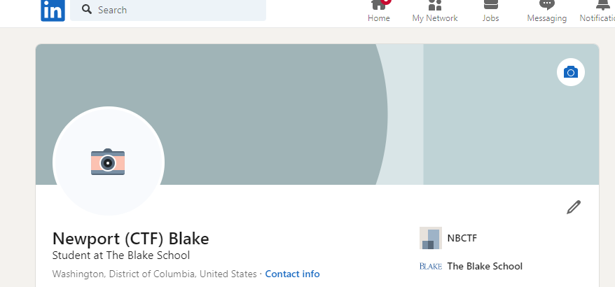
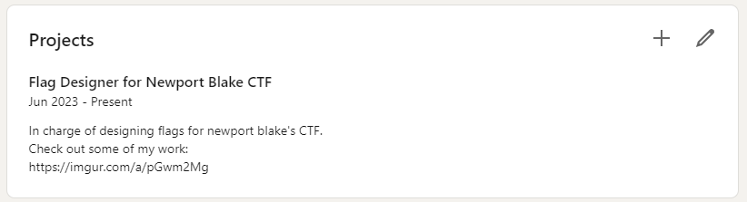
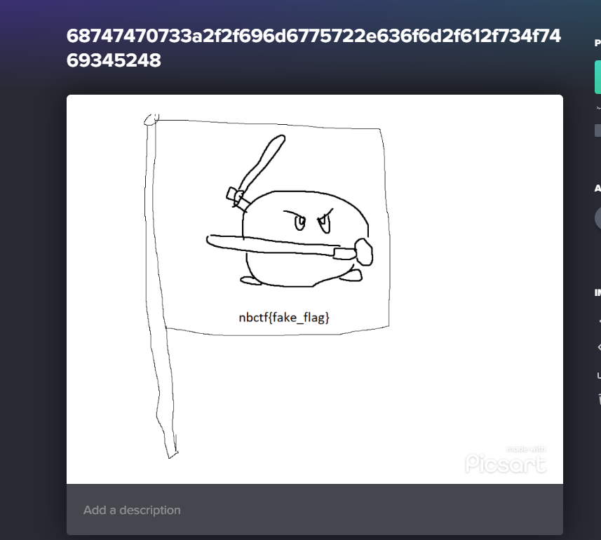
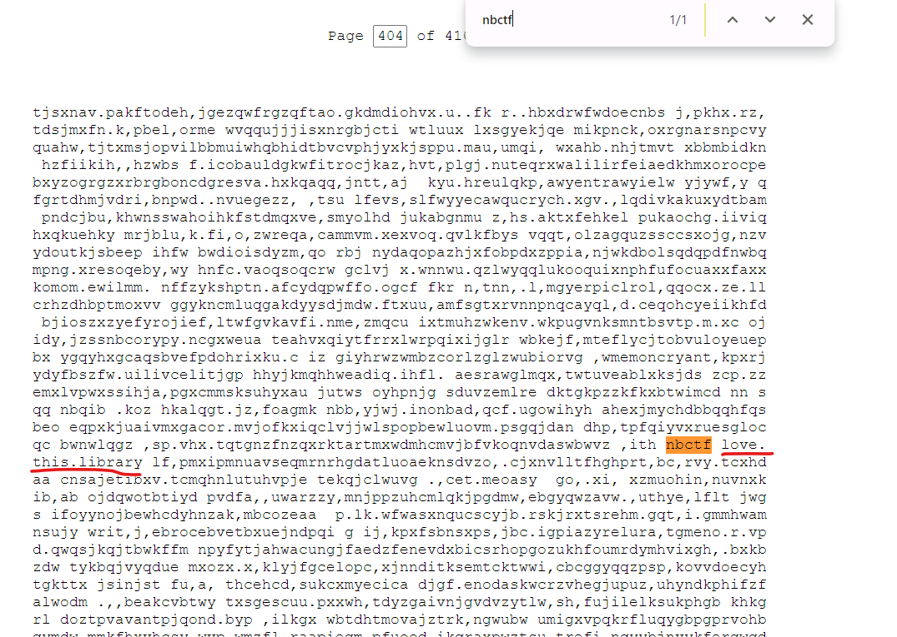
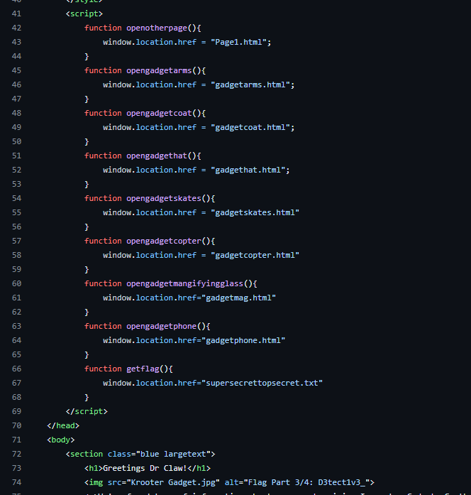

Introduction
December 1st 4 PM PST through December 3rd 5 PM PST. Those were the dates of our first cybersecurity competition. I was fortunate enough to have the opportunity to write a couple challenges for NewportBlake CTF and work with some of the most passionate and talented high schoolers out there.
I mainly focused on writing Osint challenges, but I also wrote the introductory web challenge. Overall, this post hopes to discuss a bit of my thought process when making the various challenges, the things I’ve learned and finally end on a note of looking towards the future as a CTF player and a chall designer.
Linkedout 1-2-3
I’ll start out with a confession. The Linkedout Challenge that was used during the actual competition wasn’t the original Linkedout I created. I came upon the idea of a LinkedIn challenge over summer when we just started brainstorming challenges. I finished making the LinkedIn and brainstorming challenges. Everything was going smoothly. Then I made one small mistake. I forgot to hibernate the profile.
Skip to 2 months later. While talking with friends on other CTF teams (View Source and Les Amateurs), they decided to randomly google “Newport Blake”. Lo and behold, the top result, the public Linkedin I made. Laid barren for everyone to see (and find the hidden flags). Even worse, they found the original flags for Linkedout 3. (I thought it was a pretty creative idea)
Here’s the assets for the challenge that I created with an expired student photoshop license. Let’s see if you can figure out what the idea behind the challenge was.


In case it wasn’t clear, here’s what a default LinkedIn user profile looks like:

The idea was to use Linkedin’s circular frame, along with the positioning of the profile picture to cover up parts of the flag. It was a pretty creative idea, so it’s a shame that we couldn’t use it, but the experience also taught me a valuable lesson.
Hide your Osint Challenges
Now with the backstory out of the way, let’s start diving into the actual challenges.
Ethos
Linkedin has always been interesting to me. In many ways, it’s just social media for Adults. It’s got the same core features as any other social networking app, but with a corporate spin. That sense of professionalism feels quite interwoven with Linkedin’s brand image. Like many others, my school has its own blacklist. Basically every social media website is (rightfully) blocked, everyone except Linkedin. For some reason, its professional image lets it escape stringent regulation. At the same time, I feel that’s a bit ironic. While certainly having educational value, its features like comments, liking, sharing, following… make it feel like any other Social Media app, just instead of clickbait fake giveaways, it’s engagement bait promising internship leads.
So that brings me to why I decided to make an Osint Challenge on Linkedin. It’s definitely not the first time someone’s done this, far from it. One of the first CTFs I played in, RITSEC CTF, had a Linkedin Challenge. At the same time, I thought it was funny how so many people post tons of incriminating personal information on Linkedin. Something about its “professional” atmosphere turns off people’s basic sense of web security. (Something I’m not proud to say I’ve also been guilty of) Making a Linkedin Challenge based around finding information that so many people readily give away in an effort to be “employable” felt fitting.
I’d also say the design limitations of Linkedin gave me a fun platform to work with. There’s really only so much you can do on Linkedin, so making creative challenges with those design constraints felt like an interesting opportunity. It presented an opportunity to be creative, but also as I’ll discuss later, lead to some unforeseen lessons.
Linkedout 1
This was supposed to be the easiest challenge (And by solve count, it definitely was). If you looked on the profile for a bit, under projects, you’d find a project that this person was working on. “Flag Designer for Newport Blake CTF”. Hopefully that got yall a bit interested.

Follow the link, and you’re taken to an Imgur image.

Hopefully its obvious where to go next. The Imgur title looks a bit off… Plugging it into cyberchef will give you another Imgur link, where if you scroll to the bottom… your flag awaits.
Overall, very simple and I’m glad everyone was able to get through this one with relative ease.
Linkedout 2
Oh boy. Where do I start with this one. This challenge was probably responsible for 10% of all support tickets we received. If you had me look back objectively, it was most definitely a bad challenge. But it’s in the suckiness of the challenge that also taught me the most.
The challenge was supposed to be easy. A simple OSINT Challenge, based around finding the location of an image. I’d visited UPenn’s Campus a couple times, so I decided to edit an Image I had from my camera reel.
There’s supposed to be an internal joke with the photo as well. The actual image is of “Ben on a Bench”. During my college tour, there’s apparently a tradition for students to get drunk and pee on the statue. A lot of people don’t know that when they visit campus, and they take pictures sitting on the Ben Statue. I thought it’d be funny to get a fellow organizer (Kroot) to join in on that tradition.
In terms of the actual challenge, you were supposed to find that location, go to what3words, and find the closest intersection.
A LOT of people did not know that they were supposed to use What3Words. And herein lies the fundamental design flaw of the challenge to me. The difficult part of the challenge wasn’t the actual Osint, but rather figuring out flag submissions. I (mistakenly) thought the hint “What three words would give that location” was explicit enough, but it clearly wasn’t.
When I was designing the challenge, I’d done a lot of guessy What3Word challenges, so I tried my best to avoid it becoming guessCTF. First, the location was the nearest intersection, rather than the actual location. This was to prevent having to manually check a bunch of possible options. I also tried to further hint that it was What3Words with the description “Flag Format is nbCTF{xxxx.xxxx.xxxx}”. Since What3Words separates it’s various words with dots.
One thing I felt interesting, was the overall feedback. Some of the more experienced CTFers were some of the largest detractors to the fact that What3Words was not explicitly mentioned. (In my defense, if you copied the hint into google, What3Words is the first result). For the new members that I talked to, most were all relatively chill with it not being explicitly mentioned.
Overall, I do agree with the criticism. It was originally a funny idea, but the implementation was mostly flawed. Most of the lessons in the takeaways section can probably be attributed at least in some way to this challenge.
Linkedout 3
This challenge was the replacement for the previously exposed challenge. When I was making the challenge, I thought it would be harder than it turned out to be. Most people spotted it out pretty quick.
By default, Linkedin throws a bunch of random hex junk after your username, but it also allows you to customize the url. Playing around with that, you get https://www.linkedin.com/in/newport-blake-ctf6e626374667b4431645f7930755f537030745f31743f7d/. The keen eyed may have spotted out the first three words spelling Newport Blake CTF, the start of all flags. From there, a simple hex decode from the rest of the rest of the URL will get you the flag.
This challenge overall went pretty smoothly. I was really trying to see if you would notice that Linkedin lets you set custom URLs.
Babbling About
I really liked writing this challenge. The inspiration for it actually came to me during class 2 days before the CTF. The premise is simple.
A monkey with a typewriter will eventually type out the works of Shakespeare.
Funny thought experiment for sure, but it also got me thinking. It can type anything… even a flag?. Fortunately, through my random times on the internet, I’d stumbled upon an online version. That random piece of information lay dormant, until I needed it years later. To make a CTF challenge! The website doesn’t explicitly mention the monkey problem, rather the book of babel. (I hope you see where the name comes from)
The library of babel is an interesting thought experiment, a little beyond my reach in terms of philosophy, but I do recommend giving the about page a read some time, it’s quite interesting if I say so myself.
Enough random chit chat. The idea was pretty simple, you were given enough information to find a single page in the library of babel. From there, there was a flag on that page. For your convenience (and my sanity troubleshooting support tickets) we chose a flag that was easily identifiable.

We even mentioned in the hints to use this flag format. I think that level of specificity and looking forward definitely helped this challenge run smoothly. Contrary to Linkedout2, we had no support tickets relating to flag submission (while with Linkedout 2, we got so many tickets that it became a running joke).
A simple challenge that I’m surprised isn’t more common. But I suppose if it was, there’d be even less of a point in doing it.
Inspector Gadget
What’s a CTF without a good ol flag finder challenge. As an homage to my first ever web chall, Inspector on PicoCTF, I created Inspector gadget! I will duly admit, although I’ve watched a couple episodes as a kid, I never was a die-hard fan. You can’t completely blame me though…
I don’t have cable.
Anyways, the flag was broken down into 4 parts, first was hidden on the main page in a comment. The second part was hidden in the title of one of the sections, the third was in robots.txt, and the last was on a hidden page named “supersecrettopsecret.txt”. Once you inspected the page, you might notice something was off.

Why did the author define a bunch of scripts to change pages? you might wonder. Well it allows me to sneak in a little function at the bottom, that hints at another page. That function is never called, but it gives you enough information to solve the challenge.
Also, in case you were curious, yes ChatGPT wrote all the descriptions of his various tools. I aint writing that much about the “gadget arms”.
I suppose my main takeaway from this challenge was to get a bit creative. As unsurprising as it might sound, a lot of people simply ctrl f “flag” and went on their merry way (to be fair, I can’t really blame them. What did I expect.) That being said, I would’ve liked it to be a bit more interesting. Small things like removing the words flag so searching won’t give you the exact part that you need.
Maybe that’s what I’ll do for Inspector Gadget’s Revenge next year…
Cue ominous music
Takeaways
I’ll summarize into a couple takeaways. In part to help any aspiring challenge designer, but most likely to help future me when I start designing challenges for next year.
Add More Red Herrings
Sometimes if there’s only one path to take, the challenge is quite logical. Linkedout 1 kinda suffered with that issue. There inherently aren’t a lot of things you can do with Linkedin. Even when we tried to get creative with the URL, that was about the most obscure thing we could do. I’m sure there are some other things out there that I overlooked, but the overall straight forwardness of Linkedin (It is a professional website after all) means that it probably shouldn’t have been a three-part challenge. Making sure there’s enough possible answers, and an interesting attack surface is important, especially for Osint challenges.
Make the Difficulty Intuitive
I will admit, as these were the first challenges I have ever written, sometimes it’s hard to gauge how difficult certain challenges are. I think it’s fine if a challenge is a bit easier than expected (To be honest, I thought persona was going to be more challenging than it actually was). But an easy challenge should be relatively easy. Especially for individuals who are just getting into CTFs, making sure that the difficulty is logical, and relatively consistent should be something to keep in the back of your mind when designing challenge difficulty.
Account for Various Interpretations
This is mainly a thing with the “Infamous” Linkedout 2. I think I had to tweak the challenge description twice because of what I thought was intuitive wasn’t as obvious for others as I originally thought. Sometimes those subconscious assumptions that we as challenge authors make (after all, we may assume others have as much familiarity with the vulnerability that we do) can make challenges harder than they have to be.
It’s Ok To Make Things Harder Than They Might Seem at First Glance
I know this seems like it might contradict point number 2, but I think it’s more of a modifier. As a challenge author, it’s hard to strike a balance of difficult, not guessy, and challenging for others. You want individuals to learn from your challenge and gain some applicable skills that they can use in other CTFs or life in general. It’s ok to make your challenges a bit more difficult to push people to learn about various concepts.